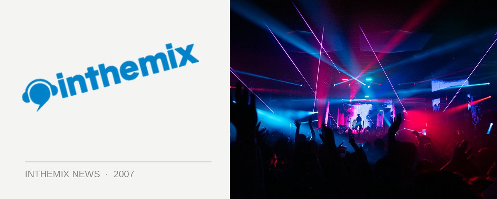

Friendly returns for Australian tour
Ex-pat Aussie Friendly will be returning to his homeland for a club tour of mashed-up breaks, electro house, bootlegs and other oddities you could expect from the DJ/producer. Achieving enviable success as a live act in Australia in the mid to late 90’s, Friendly has been a regular on the breaks scene in East London for quite a few years now but confirms his sets are now taking in a range of other ‘dirty’ sounds.
In addition to his longstanding residency at The End in London, he has also played across the globe from Europe to the US to back to Australia again. Some of his successful international releases have included The Bump and Grind and Glottal Stomp, which have been caned by some of the biggest names in breakbeat.
To sample Friendly’s latest sound, check him out at the following dates:
Thursday 5 April : Break Inn @ CHINESE LAUNDRY, SYDNEY
Friday 6 April : Bughauz @ BROWN ALLEY, MELBOURNE
Saturday 7 April: L9ONE, COOLANGATTA
Monday 9 April: HALO, HOBART
Thursday 14 April: Chew the Fat! @ PLAY, BYRON BAY
Friday 13 April: Breaks & Enter @ GPO, BRISBANE
Saturday 14 April: AUCKLAND, NEW ZEALAND
Friday 20 April: AMBAR, PERTH
Saturday 21 April: ODESSEY, BUNBURY